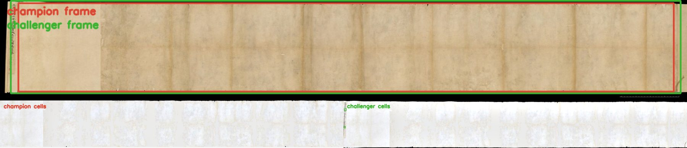
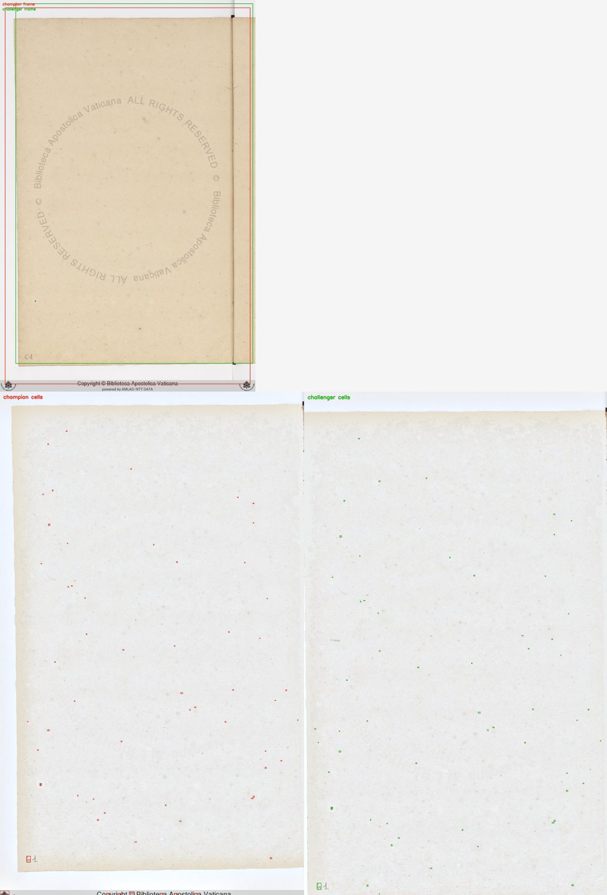
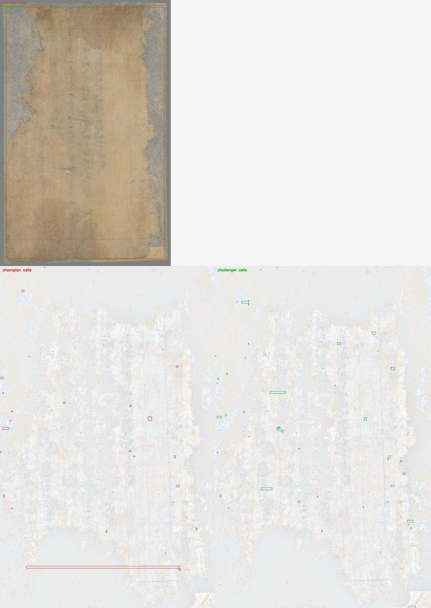
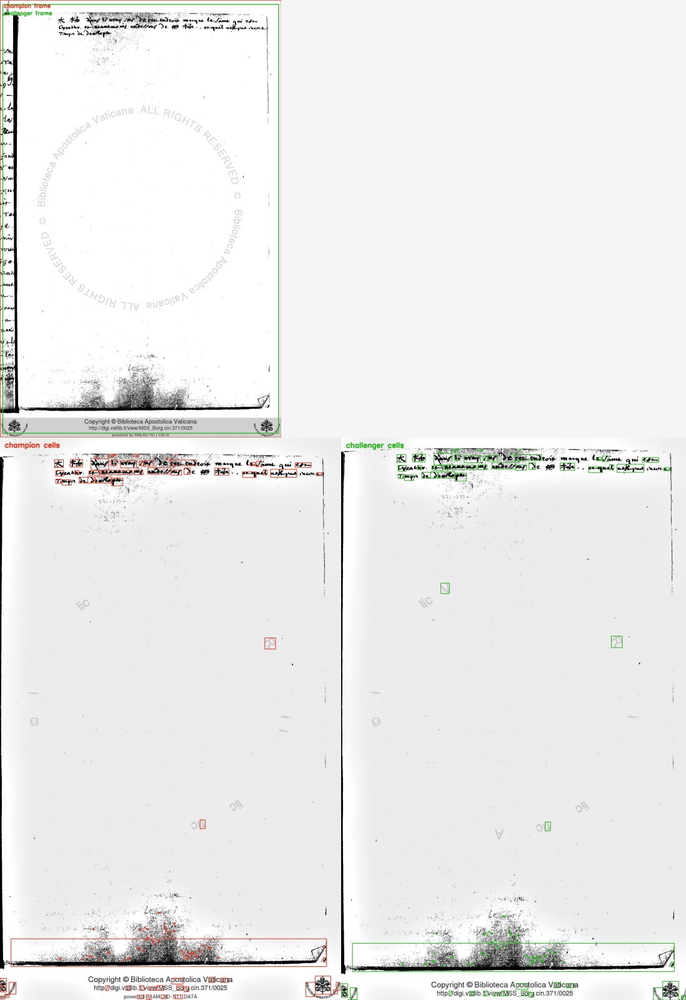
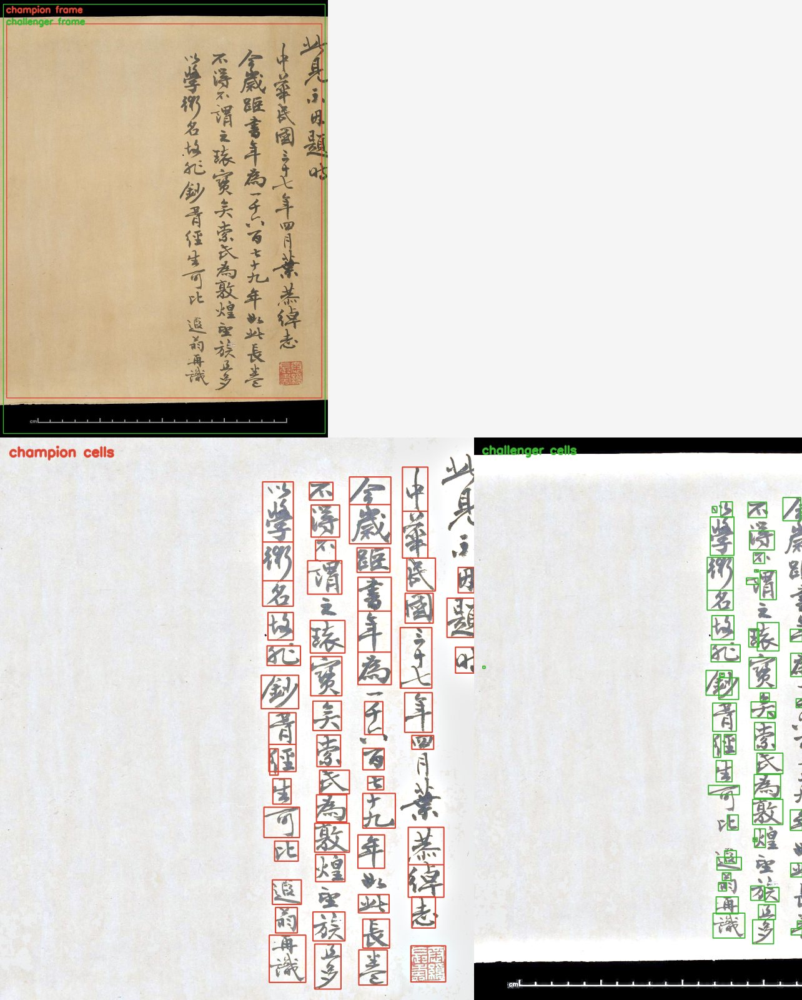
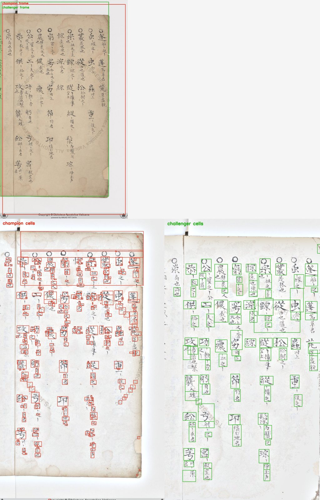
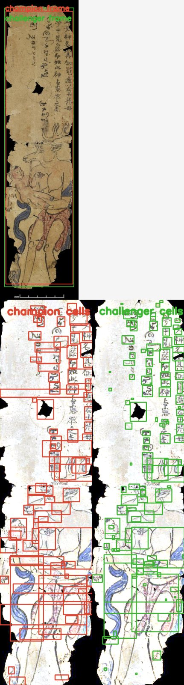
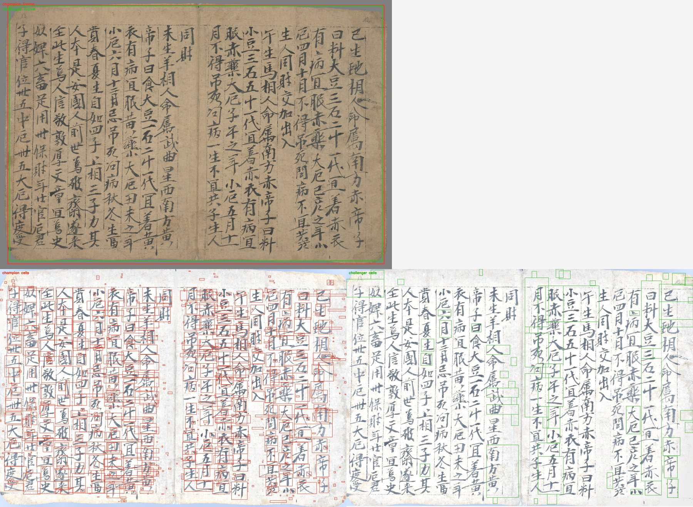

Light-backdrop frame challenger
28 frozen folios. Overall median health 0.233 →
0.149 (-0.084). Red is the champion;
green is the challenger.
| corpus | n |
champion | challenger | delta |
|---|
| borg_cin | 14 | 0.343 | 0.361 | +0.019 |
| estr_or | 2 | 0.482 | 0.770 | +0.288 |
| gallica | 7 | 0.116 | 0.120 | +0.004 |
| idp | 5 | 0.120 | 0.085 | -0.035 |
Worst challenger folios and largest changes
idp_1998_116_sample10/f001r — 0.000 → 0.000 (+0.000; kept 0→2; lab_border_distance)

vatican_borg_cin_398/f061r — 0.001 → 0.001 (+0.000; kept 59→57; lab_border_distance)

gallica_pelliot_chinois_4837/page_0003 — 0.044 → 0.056 (+0.012; kept 21→40; lab_border_distance)

vatican_borg_cin_371_scout/f025r — 0.071 → 0.074 (+0.003; kept 109→103; lab_border_distance)

idp_1998_116_sample10/f005r — 0.836 → 0.076 (-0.760; kept 57→53; lab_border_distance)

vatican_vat_estr_or_16_scout/f002v — 0.126 → 0.732 (+0.606; kept 345→94; lab_border_distance)

idp_1919_0101_0_177_3/f000r — 0.635 → 0.085 (-0.550; kept 80→119; lab_border_distance)

gallica_pelliot_chinois_3398_2/page_0006 — 0.116 → 0.553 (+0.437; kept 785→61; lab_border_distance)
